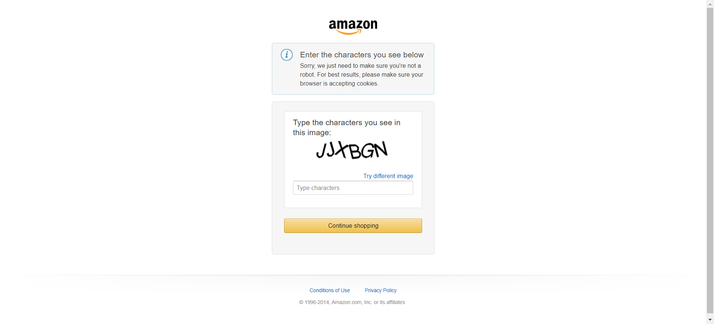

Started
Jul 7, 2023 07:11:49 PM
Ended
Jul 7, 2023 07:12:02 PM
Features Passed
0
Features Failed
3
Features
Scenarios
Steps
Timeline
System/Environment
| Name | Value |
|---|---|
| AppName | My Project |
| user | Upstream GS |
| build | 1.1 |
| os | Microsoft Windows 11 |
-
Search product and select and add to cart with other functionalities
7:11:49 PM / 00:00:12:119 Fail
Search product and select and add to cart with other functionalities
07.07.2023 7:11:49 PM 07.07.2023 7:12:02 PM 00:00:12:119 · #test-id=1FailAdding product to the cart and validating accordingly chromeGiven user is on applicationcom.amazon.automation.AppHooks.ApplicationHooks.as(io.cucumber.java.Scenario)Then user search the product "Amazon Essentials Women's Digital Chronograph Resin Strap Watch"Step skippedThen product add to the cartStep skippedAnd user validates the product with quantity "1" in the cartStep skippedThen user search the product "Mouse"Step skippedAnd increase the quantity of the product by 2 in cartStep skippedThen product add to the cartStep skippedAnd user validates the product with quantity "2" in the cartStep skippedThen user search the product "Apple AirTag Leather Key Ring - California Poppy"Step skippedThen product add to the cartStep skippedAnd user validates the product with quantity "1" in the cartStep skippedThen user deletes the product "Apple AirTag Leather Key Ring - California Poppy"Step skippedThen user search the product "office chair"Step skippedThen product add to the cartStep skippedThen navigate to cart and validate the save later functionalityStep skipped -
Login Page Feature
7:11:49 PM / 00:00:08:795 Fail
Login Page Feature
07.07.2023 7:11:49 PM 07.07.2023 7:11:58 PM 00:00:08:795 · #test-id=3FailCustomer login to the app and validate Forgot Password Link chromeGiven user is on login pagecom.amazon.automation.AppHooks.ApplicationHooks.as(io.cucumber.java.Scenario)anyname When user enter UsernameStep skippedAnd user enter PasswordStep skippedThen forgot your password link should be displayedStep skippedcom.amazon.automation.AppHooks.ApplicationHooks.tearDown(io.cucumber.java.Scenario)Customer_login_to_the_app_and_validate_Forgot_Password_Link_chrome
When user enter UsernameStep skippedAnd user enter PasswordStep skippedThen forgot your password link should be displayedStep skippedcom.amazon.automation.AppHooks.ApplicationHooks.tearDown(io.cucumber.java.Scenario)Customer_login_to_the_app_and_validate_Forgot_Password_Link_chrome
-
Login for Amazon website
7:11:49 PM / 00:00:07:012 Fail
Login for Amazon website
07.07.2023 7:11:49 PM 07.07.2023 7:11:56 PM 00:00:07:012 · #test-id=5FailVerify the Account for amazon chromeGiven as a user login for amazon websiteLaunching Applicationcom.amazon.automation.AppHooks.ApplicationHooks.as(io.cucumber.java.Scenario)anynameThen as a user click signinStep skippedThen as a user click create a accountStep skippedThen as a user Verify the username Validate the MessageStep skippedThen as a user Verify the Mobilenumber Validate the MessageStep skippedThen as a user Verify the Password Validate the MessageStep skippedcom.amazon.automation.AppHooks.ApplicationHooks.tearDown(io.cucumber.java.Scenario)Verify_the_Account_for_amazon_chrome
-
java.lang.IllegalStateException
1 tests
java.lang.IllegalStateException
1 failedStatus Timestamp TestName Fail 19:11:54 PM Given user is on login page Login Page Feature.Customer login to the app and validate Forgot Password Link chrome.Given user is on login page -
java.lang.Exception
2 tests
java.lang.Exception
2 failedStatus Timestamp TestName Fail 19:11:54 PM Given as a user login for amazon website Login for Amazon website.Verify the Account for amazon chrome.Given as a user login for amazon websiteFail 19:11:54 PM Given user is on application Search product and select and add to cart with other functionalities.Adding product to the cart and validating accordingly chrome.Given user is on application -
org.openqa.selenium.remote.UnreachableBrowserException
1 tests
org.openqa.selenium.remote.UnreachableBrowserException
1 failedStatus Timestamp TestName Fail 19:12:02 PM com.amazon.automation.AppHooks.ApplicationHooks.as(io.cucumber.java.Scenario) Search product and select and add to cart with other functionalities.Adding product to the cart and validating accordingly chrome.com.amazon.automation.AppHooks.ApplicationHooks.as(io.cucumber.java.Scenario)